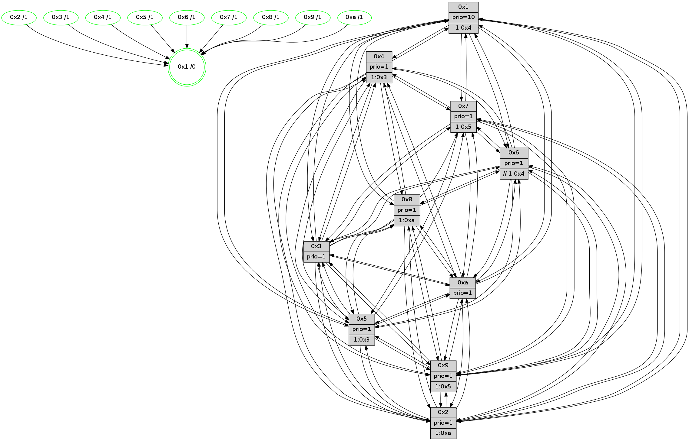

>> << IDX [start] -100 -25 -5 +0 +5 +25 +100 [1385.17470503]
 Previous packets
----------------------------------------------------------------------
1380.445920 beacon01(faad) #0 coord=01,02,03,04,05,06,07,0a,09,08 cycle=688.0ms assoc
-- color-indic=1 64 d6 22
1380.455903 beacon02(faad) #0 coord=01,02,03,04,05,06,07,0a,09,08 cycle=688.0ms assoc 64 45 13
1380.465901 beacon03(faad) #0 coord=01,02,03,04,05,06,07,0a,09,08 cycle=688.0ms assoc 64 3f 5e
1380.475904 beacon04(faad) #0 coord=01,02,03,04,05,06,07,0a,09,08 cycle=688.0ms assoc 64 48 b4
1380.485904 beacon05(faad) #0 coord=01,02,03,04,05,06,07,0a,09,08 cycle=688.0ms assoc 64 32 f9
1380.495902 beacon06(faad) #0 coord=01,02,03,04,05,06,07,0a,09,08 cycle=688.0ms assoc 64 bc 2e
1380.505903 beacon07(faad) #0 coord=01,02,03,04,05,06,07,0a,09,08 cycle=688.0ms assoc 64 c6 63
1380.515909 beacon0a(faad) #0 coord=01,02,03,04,05,06,07,0a,09,08 cycle=688.0ms assoc 64 b7 68
1380.525908 beacon09(faad) #0 coord=01,02,03,04,05,06,07,0a,09,08 cycle=688.0ms assoc 64 39 bf
1380.535908 beacon08(faad) #0 coord=01,02,03,04,05,06,07,0a,09,08 cycle=688.0ms assoc 64 43 f2
1380.547125 [Hello(9): seq=824 sym=2,5,3,4,7,6,8,10,1 sysInfo=hasWarning stat=2:4,7,13,10/5:15,6,0,8/3:7,10,8,3/4:11,4,2,2/7:10,11,7,4/6:6,14,13,13/8:8,9,2,5/10:1,2,0,0/1:12,9,3,1]
1380.550512 [Color(5) seq=427 @0:0 prio=1 >1.@3,1.@4,1.@6,1.@7]
1380.552386 [Hello(10): seq=813 sym=6,2,3,8,7,5,9,4,1 sysInfo=hasWarning stat=6:4,0,15,3/2:5,11,2,0/3:10,10,6,14/8:6,6,14,3/7:10,13,13,9/5:12,0,12,1/9:0,2,2,0/4:1,9,9,2/1:7,9,14,1]
1380.555389 PARSE ERROR************************
Traceback (most recent call last):
File "PacketAnalysis.py", line 167, in showOperaPacket
structPacket = OperaPacketParse.parsePacket(rawPacket)
File "../../pkg-python/HipSens/Core/OperaPacketParse.py", line 461, in parsePacket
return parseHelloMessage(data)
File "../../pkg-python/HipSens/Core/OperaPacketParse.py", line 109, in parseHelloMessage
sysInfo,stability,colorInfo = struct.unpack("!HBB", linkList[0:4])
error: unpack requires a string argument of length 4
48 34 07 00 03 70 00 02 02 12 02 00 03 00 05 00 06 00 04 00 08 00 09 00 0a 00 01 00 53 04 00 02 00 00 4c 12 33 ee 37 47 3b 15 b5 e1 14 8c 01 10 18 80 7e 2a 0f 8e 53 c2
1380.557947 [Hello(8): seq=824 sym=5,2,3,7,9,6,4,10,1 sysInfo=hasWarning stat=5:3,0,7,1/2:11,6,11,12/3:4,8,0,4/7:9,7,3,1/9:9,1,8,4/6:8,7,14,15/4:3,6,1,1/10:4,10,14,5/1:9,4,2,0]
1380.560910 [Color(7) seq=408 @0:0 prio=1 >1.@5,1.@6,1.@8,1.@a]
1380.562883 [Hello(4): seq=880 sym=5,8,6,2,3,9,7,10,1 sysInfo= stat=5:2,13,7,2/8:6,13,0,0/6:12,15,13,14/2:4,12,5,0/3:10,10,15,15/9:1,2,13,1/7:7,10,1,0/10:14,13,0,14/1:4,15,1,1]
1380.568866 [STC(1) #0.235 tree-change,inconsistent-stability,stable,to-color d=0]
1380.570508 [Color(1) seq=560 @0:0 prio=10 >1.@3,1.@4,1.@5,1.@9]
----------------------------------------------------------------------
1381.234050 beacon01(faad) #0 coord=01,02,03,04,05,06,07,0a,09,08 cycle=688.0ms assoc
-- color-indic=1 64 12 2c
1381.244033 beacon02(faad) #0 coord=01,02,03,04,05,06,07,0a,09,08 cycle=688.0ms assoc 64 81 1d
1381.254033 beacon03(faad) #0 coord=01,02,03,04,05,06,07,0a,09,08 cycle=688.0ms assoc 64 fb 50
1381.264032 beacon04(faad) #0 coord=01,02,03,04,05,06,07,0a,09,08 cycle=688.0ms assoc 64 8c ba
1381.274033 beacon05(faad) #0 coord=01,02,03,04,05,06,07,0a,09,08 cycle=688.0ms assoc 64 f6 f7
1381.284034 beacon06(faad) #0 coord=01,02,03,04,05,06,07,0a,09,08 cycle=688.0ms assoc 64 78 20
1381.294034 beacon07(faad) #0 coord=01,02,03,04,05,06,07,0a,09,08 cycle=688.0ms assoc 64 02 6d
1381.304039 beacon0a(faad) #0 coord=01,02,03,04,05,06,07,0a,09,08 cycle=688.0ms assoc 64 73 66
1381.314040 beacon09(faad) #0 coord=01,02,03,04,05,06,07,0a,09,08 cycle=688.0ms assoc 64 fd b1
1381.324039 beacon08(faad) #0 coord=01,02,03,04,05,06,07,0a,09,08 cycle=688.0ms assoc 64 87 fc
1381.335335 [STC(7)->1 #0.235 tree-change,inconsistent-stability,stable,to-color d=1]
1381.337549 [STC(8)->1 #0.235 tree-change,inconsistent-stability,stable,to-color d=1]
1381.339469 [STC(10)->1 #0.235 tree-change,inconsistent-stability,stable,to-color d=1]
1381.340772 [Hello(5): seq=881 sym=7,6,4,3,1,9,8,10,2 sysInfo=hasWarning stat=7:9,15,14,0/6:10,15,11,4/4:15,6,3,15/3:0,8,7,2/1:7,14,6,0/9:12,6,14,10/8:11,14,1,4/10:10,6,1,9/2:0,9,7,7]
1381.343299 [Hello(6): seq=881 sym=2,3,5,4,7,9,8,10,1 sysInfo=hasWarning stat=2:4,8,2,0/3:3,5,2,0/5:0,15,4,4/4:8,8,8,8/7:10,7,2,15/9:0,5,13,10/8:5,13,11,6/10:6,11,5,13/1:13,9,3,1]
1381.345751 [STC(9)->1 #0.235 tree-change,inconsistent-stability,stable,to-color d=1]
1381.348329 [Color(9) seq=440 @0:0 prio=1 >1.@5,1.@a]
1381.350749 [Hello(2): seq=877 sym=4,5,7,6,3,9,8,10,1 sysInfo=hasWarning stat=4:15,8,5,13/5:2,3,13,3/7:13,6,6,1/6:8,12,4,0/3:3,6,3,0/9:4,6,6,9/8:4,5,1,12/10:14,15,4,11/1:1,9,14,0]
1381.356763 [STC(4)->1 #0.235 tree-change,inconsistent-stability,stable,to-color d=1]
1381.359661 [TreeStatus(8)-.->1 #0.235 tree-change,inconsistent-stability,stable child=1]
1381.360867 [Color(10) seq=470 @0:0 prio=1]
1381.367052 [STC(6)->1 #0.235 tree-change,inconsistent-stability,stable,to-color d=1]
1381.369962 [TreeStatus(6)-.->1 #0.235 tree-change,inconsistent-stability,stable child=1]
1381.371844 [STC(5)->1 #0.235 tree-change,inconsistent-stability,stable,to-color d=1]
1381.373728 [Color(6) seq=513 @0:0 prio=1 >>1.@3,1.@4,1.@5]
----------------------------------------------------------------------
1382.022181 beacon01(faad) #0 coord=01,02,03,04,05,06,07,0a,09,08 cycle=688.0ms assoc
-- color-indic=1 64 ae 29
1382.032165 beacon02(faad) #0 coord=01,02,03,04,05,06,07,0a,09,08 cycle=688.0ms assoc 64 3d 18
1382.042162 beacon03(faad) #0 coord=01,02,03,04,05,06,07,0a,09,08 cycle=688.0ms assoc 64 47 55
1382.052165 beacon04(faad) #0 coord=01,02,03,04,05,06,07,0a,09,08 cycle=688.0ms assoc 64 30 bf
1382.062163 beacon05(faad) #0 coord=01,02,03,04,05,06,07,0a,09,08 cycle=688.0ms assoc 64 4a f2
1382.072163 beacon06(faad) #0 coord=01,02,03,04,05,06,07,0a,09,08 cycle=688.0ms assoc 64 c4 25
1382.082164 beacon07(faad) #0 coord=01,02,03,04,05,06,07,0a,09,08 cycle=688.0ms assoc 64 be 68
1382.092169 beacon0a(faad) #0 coord=01,02,03,04,05,06,07,0a,09,08 cycle=688.0ms assoc 64 cf 63
1382.112171 beacon08(faad) #0 coord=01,02,03,04,05,06,07,0a,09,08 cycle=688.0ms assoc 64 3b f9
1382.124354 PARSE ERROR************************
Traceback (most recent call last):
File "PacketAnalysis.py", line 167, in showOperaPacket
structPacket = OperaPacketParse.parsePacket(rawPacket)
File "../../pkg-python/HipSens/Core/OperaPacketParse.py", line 461, in parsePacket
return parseHelloMessage(data)
File "../../pkg-python/HipSens/Core/OperaPacketParse.py", line 125, in parseHelloMessage
struct.unpack("!H",linkList[:2])[0])
error: unpack requires a string argument of length 2
48 34 09 00 03 39 00 02 02 12 02 00 05 00 03 00 04 00 07 00 06 00 08 00 0a 00 01 00 53 04 00 02 00 00 4c 12 be 85 81 7f 38 a7 23 4c 48 cb ee f6 63 99 00 32 14 ac 4d 2e
1382.128041 [Hello(8): seq=825 sym=5,2,3,7,9,6,4,10,1 sysInfo=hasWarning stat=5:3,1,8,1/2:11,7,11,12/3:4,8,0,4/7:9,7,3,1/9:10,1,8,4/6:8,8,15,0/4:3,6,1,1/10:4,11,14,5/1:9,5,3,0]
1382.130873 [Hello(4): seq=881 sym=5,8,6,2,3,9,7,10,1 sysInfo= stat=5:2,14,8,2/8:6,13,0,1/6:12,0,14,15/2:4,13,5,1/3:10,10,15,15/9:2,2,13,1/7:7,10,1,0/10:14,14,0,14/1:4,0,2,1]
1382.134067 [Color(5) seq=428 @0:0 prio=1 >1.@3,1.@4,1.@6,1.@7]
1382.135919 [Color(4) seq=420 @0:0 prio=1 >1.@3,1.@5,1.@a]
1382.139460 [Hello(7): seq=881 sym=2,3,5,6,4,8,9,10,1 sysInfo=hasWarning stat=2:15,14,3,4/3:7,4,7,3/5:6,2,12,3/6:2,15,6,12/4:13,8,5,1/8:0,2,2,1/9:1,9,8,1/10:10,3,15,7/1:15,9,0,0]
1382.142461 [Color(8) seq=480 @0:0 prio=1 >1.@a]
1382.144203 [Color(7) seq=409 @0:0 prio=1 >1.@5,1.@6,1.@8,1.@a]
1382.146171 [Color(1) seq=561 @0:0 prio=10 >1.@3,1.@4,1.@5,1.@9]
1382.148904 [Hello(10): seq=814 sym=6,2,3,8,7,5,9,4,1 sysInfo=hasWarning stat=6:4,1,0,4/2:5,11,2,0/3:10,11,6,14/8:7,7,15,3/7:11,14,14,9/5:12,0,13,1/9:0,2,2,0/4:2,9,9,2/1:7,10,15,1]
----------------------------------------------------------------------
1382.810311 beacon01(faad) #0 coord=01,02,03,04,05,06,07,0a,09,08 cycle=688.0ms assoc
-- color-indic=1 64 9a 31
1382.820295 beacon02(faad) #0 coord=01,02,03,04,05,06,07,0a,09,08 cycle=688.0ms assoc 64 09 00
1382.830294 beacon03(faad) #0 coord=01,02,03,04,05,06,07,0a,09,08 cycle=688.0ms assoc 64 73 4d
1382.840293 beacon04(faad) #0 coord=01,02,03,04,05,06,07,0a,09,08 cycle=688.0ms assoc 64 04 a7
1382.850296 beacon05(faad) #0 coord=01,02,03,04,05,06,07,0a,09,08 cycle=688.0ms assoc 64 7e ea
1382.860295 beacon06(faad) #0 coord=01,02,03,04,05,06,07,0a,09,08 cycle=688.0ms assoc 64 f0 3d
1382.870295 beacon07(faad) #0 coord=01,02,03,04,05,06,07,0a,09,08 cycle=688.0ms assoc 64 8a 70
1382.880300 beacon0a(faad) #0 coord=01,02,03,04,05,06,07,0a,09,08 cycle=688.0ms assoc 64 fb 7b
1382.900299 beacon08(faad) #0 coord=01,02,03,04,05,06,07,0a,09,08 cycle=688.0ms assoc 64 0f e1
1382.911831 [Hello(5): seq=882 sym=7,6,4,3,1,9,8,10,2 sysInfo=hasWarning stat=7:10,0,14,0/6:10,0,11,4/4:15,7,3,15/3:0,8,7,2/1:7,15,6,0/9:13,6,14,10/8:11,15,1,4/10:11,6,1,9/2:0,9,7,7]
1382.915306 [Hello(2): seq=878 sym=4,5,7,6,3,9,8,10,1 sysInfo=hasWarning stat=4:0,9,5,13/5:2,4,14,3/7:14,7,7,1/6:8,13,5,1/3:3,6,3,0/9:5,6,6,9/8:5,6,2,12/10:15,15,5,11/1:1,10,14,0]
1382.919014 [Color(10) seq=471 @0:0 prio=1]
1382.920352 [Hello(3): seq=882 sym=1,7,6,2,4,8,9,10,5 sysInfo=hasWarning stat=1:5,1,6,0/7:5,6,9,14/6:9,15,4,1/2:15,9,15,2/4:13,0,11,13/8:13,5,3,5/9:11,4,9,0/10:13,13,14,5/5:10,11,12,1]
1382.923916 [Hello(6): seq=882 sym=2,3,5,4,7,9,8,10,1 sysInfo=hasWarning stat=2:4,8,2,0/3:3,5,2,0/5:0,0,4,4/4:9,9,8,8/7:11,8,3,15/9:1,5,13,10/8:6,14,12,6/10:7,11,6,13/1:13,10,3,1]
1382.929368 [Color(3) seq=511 @0:0 prio=1]
1382.939390 [Color(9) seq=441 @0:0 prio=1 >1.@5,1.@a]
----------------------------------------------------------------------
1383.598441 beacon01(faad) #0 coord=01,02,03,04,05,06,07,0a,09,08 cycle=688.0ms assoc
-- color-indic=1 64 26 34
1383.608425 beacon02(faad) #0 coord=01,02,03,04,05,06,07,0a,09,08 cycle=688.0ms assoc 64 b5 05
1383.618424 beacon03(faad) #0 coord=01,02,03,04,05,06,07,0a,09,08 cycle=688.0ms assoc 64 cf 48
1383.628423 beacon04(faad) #0 coord=01,02,03,04,05,06,07,0a,09,08 cycle=688.0ms assoc 64 b8 a2
1383.638425 beacon05(faad) #0 coord=01,02,03,04,05,06,07,0a,09,08 cycle=688.0ms assoc 64 c2 ef
1383.648424 beacon06(faad) #0 coord=01,02,03,04,05,06,07,0a,09,08 cycle=688.0ms assoc 64 4c 38
1383.658425 beacon07(faad) #0 coord=01,02,03,04,05,06,07,0a,09,08 cycle=688.0ms assoc 64 36 75
1383.668428 beacon0a(faad) #0 coord=01,02,03,04,05,06,07,0a,09,08 cycle=688.0ms assoc 64 47 7e
1383.688429 beacon08(faad) #0 coord=01,02,03,04,05,06,07,0a,09,08 cycle=688.0ms assoc 64 b3 e4
1383.699968 [Hello(9): seq=826 sym=2,5,3,4,7,6,8,10,1 sysInfo=hasWarning stat=2:5,8,14,11/5:0,8,1,8/3:7,10,8,3/4:13,5,3,2/7:12,13,8,4/6:6,15,14,14/8:10,10,3,6/10:3,3,0,0/1:12,11,4,1]
1383.702691 [Color(5) seq=429 @0:0 prio=1 >1.@3,1.@4,1.@6,1.@7]
1383.704491 [Color(1) seq=562 @0:0 prio=10 >1.@4,1.@5,1.@9,1.@a]
1383.706151 [Hello(4): seq=882 sym=5,8,6,2,3,9,7,10,1 sysInfo= stat=5:3,14,8,2/8:6,14,0,1/6:13,0,14,15/2:5,14,5,1/3:11,11,15,15/9:3,3,13,1/7:8,11,1,0/10:15,15,0,14/1:4,1,2,1]
1383.709494 [Hello(8): seq=826 sym=5,2,3,7,9,6,4,10,1 sysInfo=hasWarning stat=5:4,1,8,1/2:12,8,11,12/3:5,9,0,4/7:9,8,3,1/9:11,2,8,4/6:9,8,15,0/4:3,6,1,1/10:5,12,14,5/1:9,6,3,0]
1383.713496 [Hello(10): seq=815 sym=6,2,3,8,7,5,9,4,1 sysInfo=hasWarning stat=6:5,2,0,4/2:5,11,2,0/3:11,12,6,14/8:7,7,15,3/7:11,14,14,9/5:12,0,13,1/9:0,3,2,0/4:2,9,9,2/1:8,10,15,1]
1383.716163 [Hello(7): seq=882 sym=2,3,5,6,4,9,10,1 sysInfo=hasWarning stat=2:0,14,3,4/3:8,5,7,3/5:6,2,12,3/6:3,0,6,12/4:13,8,5,1/9:2,10,8,1/10:11,4,15,7/1:15,10,0,0]
1383.718968 [Color(8) seq=481 @0:0 prio=1 >1.@a]
1383.720743 [Color(4) seq=421 @0:0 prio=1 >1.@3,1.@5,1.@a]
1383.731416 [Color(7) seq=410 @0:0 prio=1 >1.@5,1.@6,1.@8,1.@a]
----------------------------------------------------------------------
1384.386572 beacon01(faad) #0 coord=01,02,03,04,05,06,07,0a,09,08 cycle=688.0ms assoc
-- color-indic=1 64 e2 3a
1384.396556 beacon02(faad) #0 coord=01,02,03,04,05,06,07,0a,09,08 cycle=688.0ms assoc 64 71 0b
1384.406554 beacon03(faad) #0 coord=01,02,03,04,05,06,07,0a,09,08 cycle=688.0ms assoc 64 0b 46
1384.416555 beacon04(faad) #0 coord=01,02,03,04,05,06,07,0a,09,08 cycle=688.0ms assoc 64 7c ac
1384.426556 beacon05(faad) #0 coord=01,02,03,04,05,06,07,0a,09,08 cycle=688.0ms assoc 64 06 e1
1384.436554 beacon06(faad) #0 coord=01,02,03,04,05,06,07,0a,09,08 cycle=688.0ms assoc 64 88 36
1384.446555 beacon07(faad) #0 coord=01,02,03,04,05,06,07,0a,09,08 cycle=688.0ms assoc 64 f2 7b
1384.456559 beacon0a(faad) #0 coord=01,02,03,04,05,06,07,0a,09,08 cycle=688.0ms assoc 64 83 70
1384.476562 beacon08(faad) #0 coord=01,02,03,04,05,06,07,0a,09,08 cycle=688.0ms assoc 64 77 ea
1384.488748 [Hello(5): seq=883 sym=7,6,4,3,1,9,8,10,2 sysInfo=hasWarning stat=7:11,1,14,0/6:11,0,11,4/4:0,8,3,15/3:1,9,7,2/1:7,0,6,0/9:14,7,14,10/8:12,0,1,4/10:12,7,1,9/2:1,10,7,7]
1384.491510 [STC(1) #0.236 tree-change,inconsistent-stability,stable,to-color d=0]
1384.492745 [Color(9) seq=442 @0:0 prio=1 >1.@5,1.@a]
1384.494241 [Hello(6): seq=883 sym=2,3,5,4,7,9,8,10,1 sysInfo=hasWarning stat=2:4,8,2,0/3:3,6,2,0/5:1,1,4,4/4:10,10,8,8/7:12,9,3,15/9:2,6,13,10/8:7,15,12,6/10:8,11,6,13/1:13,11,3,1]
1384.497643 [Color(10) seq=472 @0:0 prio=1]
1384.499178 [Hello(3): seq=883 sym=1,7,6,2,4,8,9,10,5 sysInfo=hasWarning stat=1:6,2,6,0/7:6,7,9,14/6:9,15,4,1/2:15,9,15,2/4:14,1,11,13/8:14,6,3,5/9:12,5,9,0/10:14,13,14,5/5:10,12,12,1]
1384.501990 [Color(3) seq=512 @0:0 prio=1]
1384.505546 [Hello(2): seq=879 sym=4,5,7,6,3,9,8,10,1 sysInfo=hasWarning stat=4:1,10,5,13/5:2,5,14,3/7:15,8,7,1/6:8,13,5,1/3:3,7,3,0/9:6,7,6,9/8:6,7,2,12/10:0,15,5,11/1:1,11,14,0]
1384.508346 [Color(6) seq=515 @0:0 prio=1 >>1.@4,1.@5,1.@6]
1384.512346 [Color(2) seq=459 @0:0 prio=1 >1.@a]